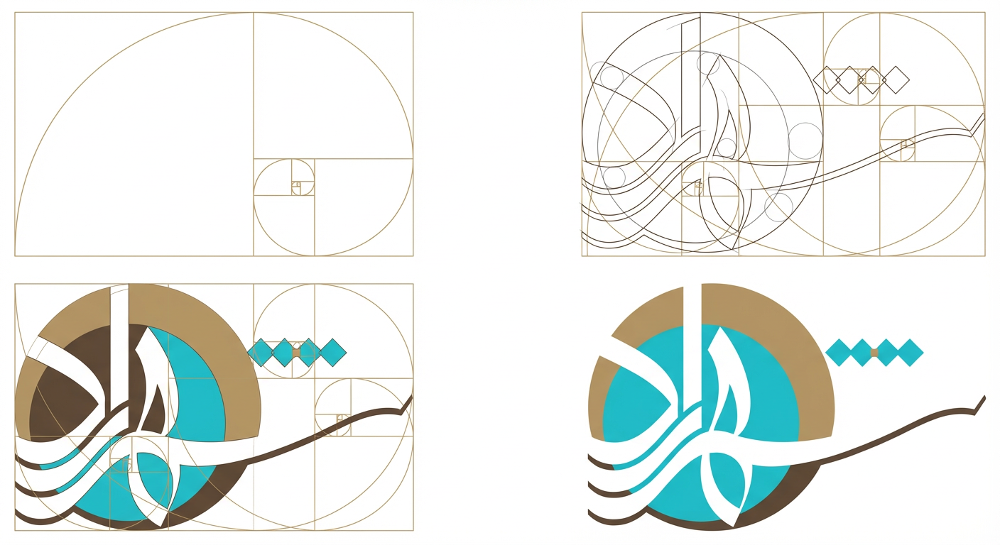
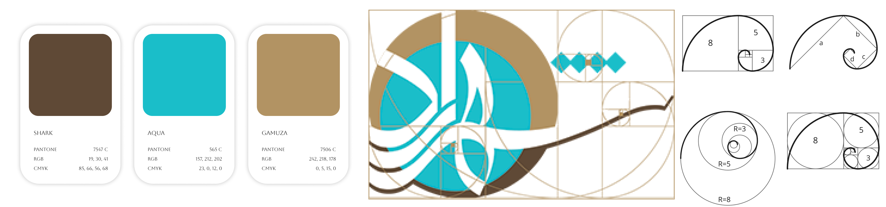
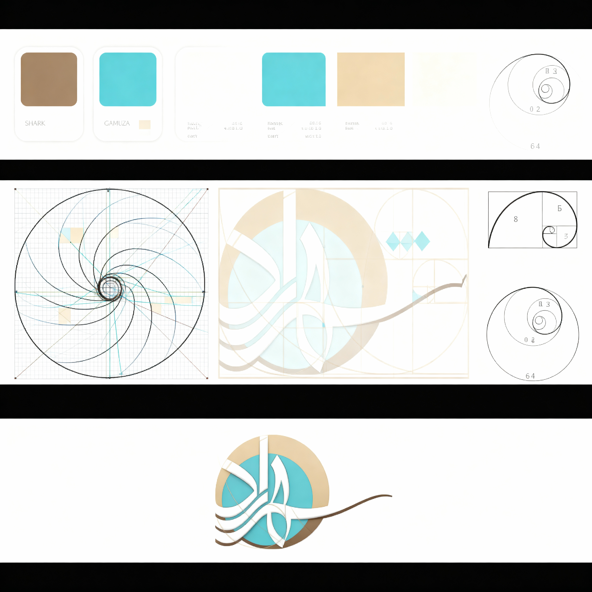
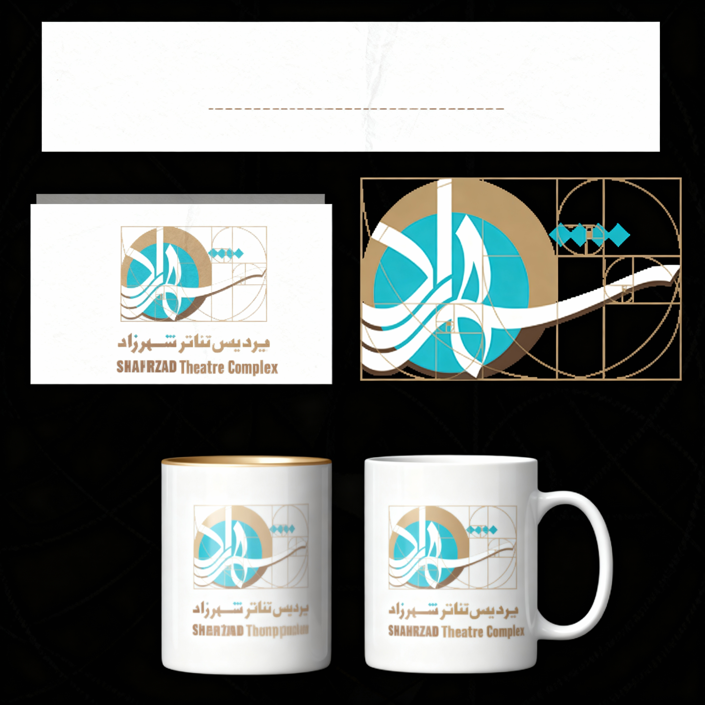

Shahrzad
Visual Identity
Product strategy and digital brand creation for Iran's largest private theatre complex — built on the Fibonacci sequence as both structure and metaphor.
Project at a Glance

The Concept
The spiral proportions of the Fibonacci sequence were refined into a form that simultaneously evokes three things: the opening of a stage curtain, the motion of live performance, and the expanding relationship between theatre and its audience.
The mark balances precision and expression — positioned at the intersection of architecture, narrative form, and theatrical emotion.
Design Process


Colour Palette
Three visual principles shaped every colour decision — the palette lets the performances, not the interface, remain at the emotional centre.

Cultural Considerations
This project required deep understanding of Persian cultural norms, traditional theatre experiences, and audience expectations across multiple generations.
The design balanced modern digital expression with respect for cultural heritage — ensuring the identity felt both contemporary and rooted.
